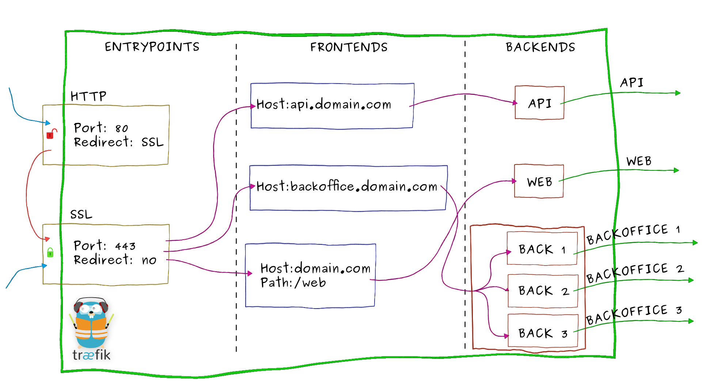

Concepts
Let's take our example from the overview again:
Imagine that you have deployed a bunch of microservices on your infrastructure. You probably used a service registry (like etcd or consul) and/or an orchestrator (swarm, Mesos/Marathon) to manage all these services. If you want your users to access some of your microservices from the Internet, you will have to use a reverse proxy and configure it using virtual hosts or prefix paths:
- domain
api.domain.comwill point the microserviceapiin your private network- path
domain.com/webwill point the microservicewebin your private network- domain
backoffice.domain.comwill point the microservicesbackofficein your private network, load-balancing between your multiple instances

Let's zoom on Træfɪk and have an overview of its internal architecture:

- Incoming requests end on entrypoints, as the name suggests, they are the network entry points into Træfɪk (listening port, SSL, traffic redirection...).
- Traffic is then forwarded to a matching frontend. A frontend defines routes from entrypoints to backends.
Routes are created using requests fields (
Host,Path,Headers...) and can match or not a request. - The frontend will then send the request to a backend. A backend can be composed by one or more servers, and by a load-balancing strategy.
- Finally, the server will forward the request to the corresponding microservice in the private network.
Entrypoints
Entrypoints are the network entry points into Træfɪk. They can be defined using:
- a port (80, 443...)
- SSL (Certificates. Keys...)
- redirection to another entrypoint (redirect
HTTPtoHTTPS)
Here is an example of entrypoints definition:
[entryPoints]
[entryPoints.http]
address = ":80"
[entryPoints.http.redirect]
entryPoint = "https"
[entryPoints.https]
address = ":443"
[entryPoints.https.tls]
[[entryPoints.https.tls.certificates]]
certFile = "tests/traefik.crt"
keyFile = "tests/traefik.key"
- Two entrypoints are defined
httpandhttps. httplistens on port80andhttpson port443.- We enable SSL on
httpsby giving a certificate and a key. - We also redirect all the traffic from entrypoint
httptohttps.
Frontends
A frontend is a set of rules that forwards the incoming traffic from an entrypoint to a backend. Frontends can be defined using the following rules:
Headers: Content-Type, application/json: Headers adds a matcher for request header values. It accepts a sequence of key/value pairs to be matched.HeadersRegexp: Content-Type, application/(text|json): Regular expressions can be used with headers as well. It accepts a sequence of key/value pairs, where the value has regex support.Host: traefik.io, www.traefik.io: Match request host with given host list.HostRegexp: traefik.io, {subdomain:[a-z]+}.traefik.io: Adds a matcher for the URL hosts. It accepts templates with zero or more URL variables enclosed by{}. Variables can define an optional regexp pattern to be matched.Method: GET, POST, PUT: Method adds a matcher for HTTP methods. It accepts a sequence of one or more methods to be matched.Path: /products/, /articles/{category}/{id:[0-9]+}: Path adds a matcher for the URL paths. It accepts templates with zero or more URL variables enclosed by{}.PathStrip: Same asPathbut strip the given prefix from the request URL's Path.PathPrefix: PathPrefix adds a matcher for the URL path prefixes. This matches if the given template is a prefix of the full URL path.PathPrefixStrip: Same asPathPrefixbut strip the given prefix from the request URL's Path.
You can use multiple rules by separating them by ;
You can optionally enable passHostHeader to forward client Host header to the backend.
Here is an example of frontends definition:
[frontends]
[frontends.frontend1]
backend = "backend2"
[frontends.frontend1.routes.test_1]
rule = "Host:test.localhost,test2.localhost"
[frontends.frontend2]
backend = "backend1"
passHostHeader = true
priority = 10
entrypoints = ["https"] # overrides defaultEntryPoints
[frontends.frontend2.routes.test_1]
rule = "Host:localhost,{subdomain:[a-z]+}.localhost"
[frontends.frontend3]
backend = "backend2"
[frontends.frontend3.routes.test_1]
rule = "Host:test3.localhost;Path:/test"
- Three frontends are defined:
frontend1,frontend2andfrontend3 frontend1will forward the traffic to thebackend2if the ruleHost:test.localhost,test2.localhostis matchedfrontend2will forward the traffic to thebackend1if the ruleHost:localhost,{subdomain:[a-z]+}.localhostis matched (forwarding clientHostheader to the backend)frontend3will forward the traffic to thebackend2if the rulesHost:test3.localhostANDPath:/testare matched
Combining multiple rules
As seen in the previous example, you can combine multiple rules. In TOML file, you can use multiple routes:
[frontends.frontend3]
backend = "backend2"
[frontends.frontend3.routes.test_1]
rule = "Host:test3.localhost"
[frontends.frontend3.routes.test_2]
rule = "Host:Path:/test"
Here frontend3 will forward the traffic to the backend2 if the rules Host:test3.localhost AND Path:/test are matched.
You can also use the notation using a ; separator, same result:
[frontends.frontend3]
backend = "backend2"
[frontends.frontend3.routes.test_1]
rule = "Host:test3.localhost;Path:/test"
Finally, you can create a rule to bind multiple domains or Path to a frontend, using the , separator:
[frontends.frontend2]
[frontends.frontend2.routes.test_1]
rule = "Host:test1.localhost,test2.localhost"
[frontends.frontend3]
backend = "backend2"
[frontends.frontend3.routes.test_1]
rule = "Path:/test1,/test2"
Priorities
By default, routes will be sorted (in descending order) using rules length (to avoid path overlap):
PathPrefix:/12345 will be matched before PathPrefix:/1234 that will be matched before PathPrefix:/1.
You can customize priority by frontend:
[frontends]
[frontends.frontend1]
backend = "backend1"
priority = 10
passHostHeader = true
[frontends.frontend1.routes.test_1]
rule = "PathPrefix:/to"
[frontends.frontend2]
priority = 5
backend = "backend2"
passHostHeader = true
[frontends.frontend2.routes.test_1]
rule = "PathPrefix:/toto"
Here, frontend1 will be matched before frontend2 (10 > 5).
Backends
A backend is responsible to load-balance the traffic coming from one or more frontends to a set of http servers. Various methods of load-balancing is supported:
wrr: Weighted Round Robindrr: Dynamic Round Robin: increases weights on servers that perform better than others. It also rolls back to original weights if the servers have changed.
A circuit breaker can also be applied to a backend, preventing high loads on failing servers. Initial state is Standby. CB observes the statistics and does not modify the request. In case if condition matches, CB enters Tripped state, where it responds with predefines code or redirects to another frontend. Once Tripped timer expires, CB enters Recovering state and resets all stats. In case if the condition does not match and recovery timer expires, CB enters Standby state.
It can be configured using:
- Methods:
LatencyAtQuantileMS,NetworkErrorRatio,ResponseCodeRatio - Operators:
AND,OR,EQ,NEQ,LT,LE,GT,GE
For example:
NetworkErrorRatio() > 0.5: watch error ratio over 10 second sliding window for a frontendLatencyAtQuantileMS(50.0) > 50: watch latency at quantile in milliseconds.ResponseCodeRatio(500, 600, 0, 600) > 0.5: ratio of response codes in range [500-600) to [0-600)
To proactively prevent backends from being overwhelmed with high load, a maximum connection limit can also be applied to each backend.
Maximum connections can be configured by specifying an integer value for maxconn.amount and
maxconn.extractorfunc which is a strategy used to determine how to categorize requests in order to
evaluate the maximum connections.
For example:
[backends]
[backends.backend1]
[backends.backend1.maxconn]
amount = 10
extractorfunc = "request.host"
backend1will returnHTTP code 429 Too Many Requestsif there are already 10 requests in progress for the same Host header.- Another possible value for
extractorfuncisclient.ipwhich will categorize requests based on client source ip. - Lastly
extractorfunccan take the value ofrequest.header.ANY_HEADERwhich will categorize requests based onANY_HEADERthat you provide.
Servers
Servers are simply defined using a URL. You can also apply a custom weight to each server (this will be used by load-balancing).
Here is an example of backends and servers definition:
[backends]
[backends.backend1]
[backends.backend1.circuitbreaker]
expression = "NetworkErrorRatio() > 0.5"
[backends.backend1.servers.server1]
url = "http://172.17.0.2:80"
weight = 10
[backends.backend1.servers.server2]
url = "http://172.17.0.3:80"
weight = 1
[backends.backend2]
[backends.backend2.LoadBalancer]
method = "drr"
[backends.backend2.servers.server1]
url = "http://172.17.0.4:80"
weight = 1
[backends.backend2.servers.server2]
url = "http://172.17.0.5:80"
weight = 2
- Two backends are defined:
backend1andbackend2 backend1will forward the traffic to two servers:http://172.17.0.2:80"with weight10andhttp://172.17.0.3:80with weight1using defaultwrrload-balancing strategy.backend2will forward the traffic to two servers:http://172.17.0.4:80"with weight1andhttp://172.17.0.5:80with weight2usingdrrload-balancing strategy.- a circuit breaker is added on
backend1using the expressionNetworkErrorRatio() > 0.5: watch error ratio over 10 second sliding window
Launch
Træfɪk can be configured using a TOML file configuration, arguments, or both.
By default, Træfɪk will try to find a traefik.toml in the following places:
/etc/traefik/$HOME/.traefik/.the working directory
You can override this by setting a configFile argument:
$ traefik --configFile=foo/bar/myconfigfile.toml
Træfɪk uses the following precedence order. Each item takes precedence over the item below it:
- arguments
- configuration file
- default
It means that arguments overrides configuration file. Each argument is described in the help section:
$ traefik --help